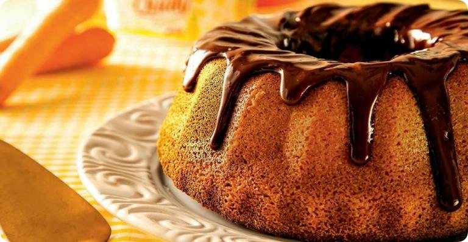

Bolo de Cenoura
Bolo de cenoura rápido e delicioso para você fazer no café da tarde.
Ingredientes:
Cobertura:
Modo de preparo:
Massa:
No liquidificador, bata as cenouras, o óleo e os ovos. Em um recipiente, coloque o creme de cenouras e adicione o açúcar e a farinha peneirados e misture bem. Junte o fermento e misture um pouco mais. Despeje a massa em uma forma de furo no meio, untada, e leve ao forno, preaquecido, até assar e dourar.
Cobertura:
Em uma panela, coloque todos os ingredientes e cozinhe, misturando sempre, até formar uma cobertura lisa. Desenforme o bolo e cubra com a cobertura.